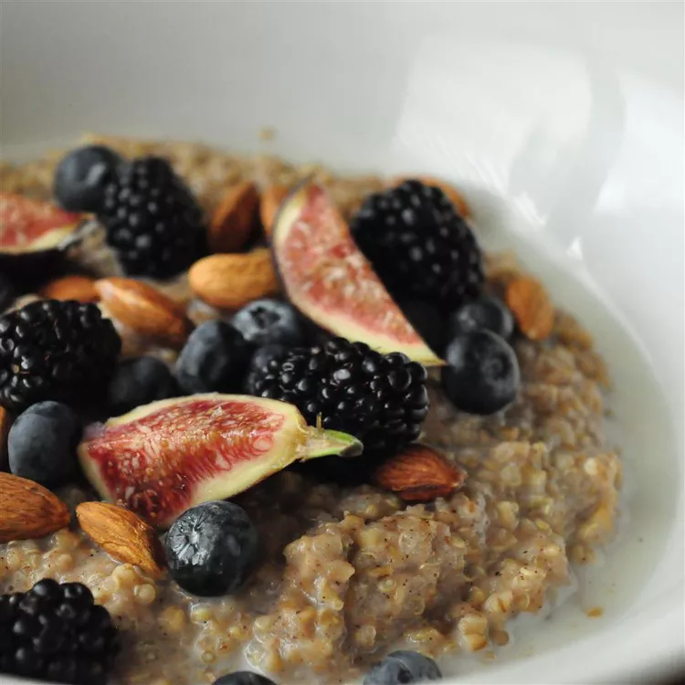

Brown rice porridge

Description
Use up that leftover brown rice and try something new for breakfast. Experiment with it to make it your own,you can try using any mixture of dried fruit instead of the blueberries.
Ingredients
- 1 cup cooked brown rice
- 1 cup 2% low-fat milk
- 2 tablespoons dried blueberries
- 1 dash cinnamon
- 1 tablespoon honey
- 1 egg
- ¼ teaspoon vanilla extract
- 1 tablespoon butter
Steps
- Combine the cooked brown rice, milk, blueberries, cinnamon, and honey in a small saucepan. Bring to a boil, then reduce heat to low and simmer for 20 minutes.
- Beat the egg in a small bowl. Temper the egg by whisking in some of the hot rice, a tablespoon at a time until you have incorporated about 6 tablespoons. Stir the egg into the rice along with the vanilla and butter, and continue cooking over low heat for 1 to 2 minutes to thicken.